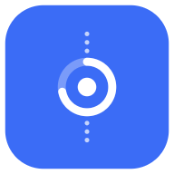

Privacy policy
Draft for owner and legal review. Everything in [brackets] must be filled in, and this notice removed, before the page is published (docs/08 §6.1).
In short
- Dottoday works fully on your device, encrypted, with no account.
- If you sign in, your tasks sync to your own account so they appear on your other devices. Nobody else can read them.
- No ads, no analytics, no trackers. We never sell or share your data.
- Your calendars stay on your device. Google and Microsoft calendars pass through our server without being stored.
- You can export everything and delete your account at any time.
Who we are
Dottoday is made by [OWNER: legal name of the person or company, postal address, country]. We are the controller of the data described here. Contact: [OWNER: privacy contact address].
On your device
Your tasks, notes, subtasks, settings, local backups and recent searches are stored in a database on your device, encrypted with a key kept in the system's secure storage (Keychain on Apple devices, Keystore on Android). On the web the database is kept in your browser's storage; a browser cannot protect it as strongly as a phone or computer can, so use the web app only on a computer you trust.
Recent searches never leave the device. Exports are files you create and share yourself; they are not encrypted, and the app says so before you save one.
When you sign in
An account is optional. If you create one (with an email link, Sign in with Apple or Google), we store:
- your email address (with Sign in with Apple this may be a private relay address) and a random account id;
- the display name you choose, if any;
- your tasks and their details: titles, notes, times, colours, icons, repeat rules, reminders, subtasks, energy level and your app settings.
We use this only to sign you in and keep your devices in sync. It travels over an encrypted connection (TLS) and is stored in a database where each row can be read only by its owner. Like any server, ours keeps short technical logs (for example IP addresses at sign-in) for security.
Calendars
Calendars on your device (Apple Calendar, Android calendars, macOS Calendar): Dottoday reads them on the device after you allow it. Their events are never sent to us and are never synced. If you turn on "Send changes back", edits go from the app to the calendar on the same device.
Google Calendar and Outlook / Microsoft 365: when you connect one, the provider gives our server a token that lets it read your calendars and events and, if you turn on "Send changes back", change the start, end and title of events. The token is kept in an encrypted vault that only our server functions can open; the app never sees it. Events pass through our server to your device each time it refreshes and are not stored there. We keep the email address of the connected account to label it. Disconnecting deletes the token.
Dottoday's use of information received from Google APIs adheres to the Google API Services User Data Policy, including the Limited Use requirements.
Reminders
On iPhone, iPad, Android and Mac, reminders are scheduled on the device. A reminder shows the task's title and time, never its notes; you can hide reminder content on the lock screen in your system settings. On the web, if you turn on notifications, the reminder text is encrypted in your browser before it is uploaded, so our server and your browser's push service only see unreadable data, the time and a task id.
Crash reports
If the app crashes or hits an error, it may send a report to Sentry, our crash-reporting service: the kind of error, where in the app's code it happened, the app version, your operating system and device model, and a random id for this installation. Reports never include your tasks, notes, searches, email address or account. We use them only to fix bugs. [OWNER: confirm Sentry is configured to not store IP addresses, see docs/08 §6.1.]
Feedback
Settings › Send feedback opens an email in your own mail app. If you send it, we receive your email address and what you wrote. If you leave "Add diagnostics" on, the email also contains the app version, platform, how many tasks are on the device and a random device id — never task text. You can read the block before you send it.
Who processes your data
We do not sell, rent or share your data. These services process it on our behalf, only to run Dottoday:
| Service | What for | Data | Location |
|---|---|---|---|
| Supabase | Accounts, sync, calendar connections, web push | Account, tasks, calendar tokens, push data | [OWNER: project region] |
| Sentry (Functional Software, Inc.) | Crash reports | Crash reports as described above | [OWNER: EU or US] |
| Resend | Sending the account-deletion confirmation email | Email address | [OWNER: region] |
| Apple, Google | Sign in with Apple / Google, if you use them | As set by your Apple or Google account | Their own terms |
| Google, Microsoft | Calendar access, if you connect it | Calendar events, as described above | Their own terms |
| Google Fonts (web only) | Font files for characters the app's font lacks | Your IP address, as with any web request | Google's terms |
[OWNER/LEGAL: transfers outside the EU/EEA and the safeguards used, for example Standard Contractual Clauses.]
How long we keep it
- Account data and synced tasks: until you delete them or your account. Deleted tasks stay in Trash for 30 days so you can bring them back.
- Calendar tokens: until you disconnect the calendar or delete your account.
- Crash reports: [OWNER: Sentry retention, 90 days by default].
- Server backups: [OWNER: Supabase backup retention for the plan].
- Feedback emails: [OWNER: retention].
Delete your account
In the app: Settings › Account › Delete account. This deletes your account and everything stored with it on our servers within 24 hours, and we email you when it is done. Tasks on your devices stay there until you remove the app. You can export your data first from the same screen.
If you can no longer use the app, email [OWNER: privacy contact address] from your account's address and we will delete it for you.
Your rights
You can access and take a copy of your data (Settings › Export), correct it in the app, delete it, and object to or restrict how we use it. Where we rely on your consent (signing in, connecting a calendar, crash reports [OWNER/LEGAL: legal basis per purpose]), you can withdraw it at any time. If you are in the EU, EEA or UK you can also complain to your data protection authority. To exercise any right, write to us at the address above.
Children
Dottoday is for people aged 13 and over. We do not knowingly collect data from children under 13. If you believe a child has created an account, contact us and we will delete it. [OWNER/LEGAL: review the age for EU users, docs/store/age-rating.md.]
Security
Data is encrypted on your device and in transit, server access is limited to each account's own rows, and calendar tokens are kept in an encrypted vault. No system is perfectly secure; if we learn of a breach that affects you, we will tell you as the law requires.
Changes
If this policy changes, we update the date at the top and, for important changes, tell you in the app's "What's new".